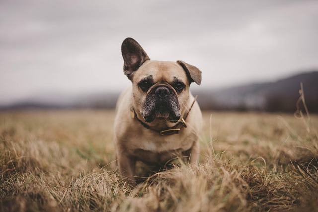

Apenas alguns senhores estiveram presentes na primeira coroação de Aegon à
foz da Água Negra, mas centenas puderam testemunhar a segunda, e dezenas de milhares o celebraram depois nas ruas de Vilavelha, enquanto ele atravessava a cidade
no dorso de Balerion. Entre os presentes na segunda coroação de Aegon estavam os
meistres e arquimeistres da Cidadela. Talvez seja esse o motivo por que essa coroação,
e não a do Aegonforte no dia do desembarque de Aegon, foi considerada o início do
reinado de Aegon

| 1 |
2 |
3 |
| 12 |
23 |
34 |
| 10 |
29 |
38 |
| 17 |
55 |
37 |
| dfzhxa |
bdxgdfhukvf |
cxgklfhy |
| hjdfhfxtgjuk |
bcfjgtxd |
cdfgtjxe |